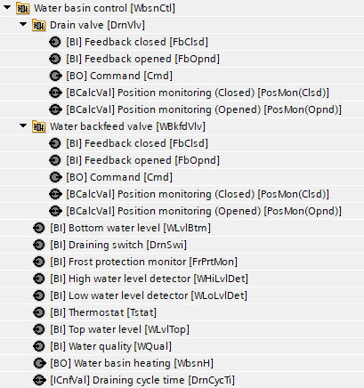
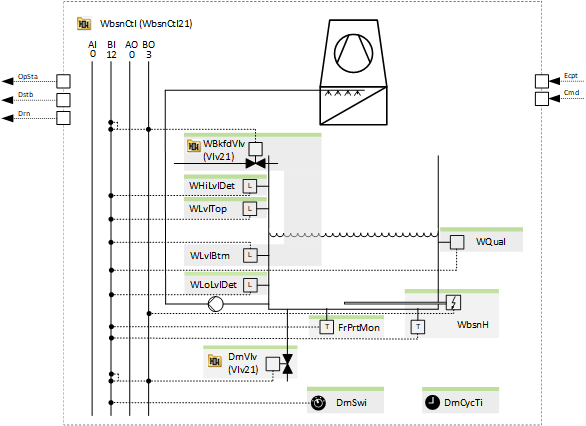
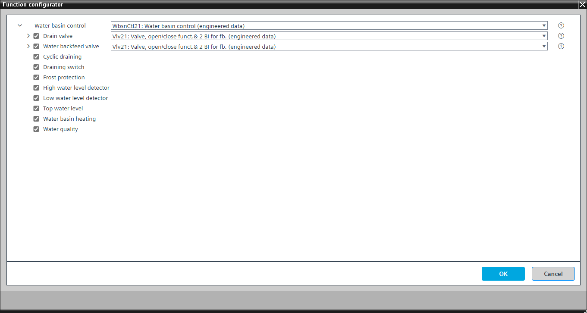

[WbsnCtl21] Water basin control
Program block, name / node subtype: [WbsnCtl21] Water basin control
Library hierarchy: Cooling and refrigeration equipment
Family: WbsnCtl
Project tree | Diagram |
|---|---|
 |  |
Configurator


Program blocks are stored in the library without I/Os. Use the auto-create and auto-connect functions to create I/Os and/or to connect them to the interface blocks, e.g., R_A, CMD_B. Alternatively, take the I/Os from the folder containing the predefined I/Os in the library and/or from the plant and connect them to the interface blocks.
Function
Controls a water basin (for wet cooling tower).
Optional functions
This program block has the following optional functions:
Option: High water level detector (1xBI)
Reads a high water level detector contact, generates an alarm and opens the drain valve for a specified time, e.g., 5 minutes.
Option: Top water level (1xBI)
Reads a top water level contact and closes the water backfeed valve.
Option: Water backfeed valve (1xBO,3xBI)
Controls a shutoff valve (Vlv21).
Reads a bottom water level contact and opens the valve for a specified time, e.g., 10 minutes or until the top level contact closes.
Option: Low water level detector (1xBI)
Reads a low water level detector contact, generates an alarm (activates the disturbance pin), closes the drain valve (if drain switch is set to "Auto"), and stops the water basin heating with higher priority.
Option: Drain valve (1xBO,2xBI)
Controls a shutoff valve (Vlv21) for draining.
Option: Cyclic draining
Performs cyclic draining for a specified time, e.g., 72 hours.
This option can only be applied successfully together with the optional drain valve.
Option: Drain switch (1xBI)
Reads the drain switch signal, opens the drain valve, closes the backfeed valve, stops the water basin heating (all with higher priority), and suppresses event detection for frost protection monitor and low water level detector.
This option can only be applied successfully together with the optional drain valve.
Option: Water quality (1xBI)
Reads a poor water quality detector contact and initiates draining.
Option: Water basin heating (1xBO,1xBI)
Reads the binary output of the thermostat and commands a binary output (usually an electric heater).
Option: Frost protection (1xBI)
Reads the binary output of the frost detector, generates an alarm, and activates the binary output for water basin heating.
Optional elements
Name | Description | Type | Alarm / Notification class | Trend / Type |
|---|---|---|---|---|
WHiLvlDet | High water level detector | BI: Binary input | Yes, 5 | N/A |
WLvlTop | Top water level | BI: Binary input | No | No |
WBkfdVlv | Water backfeed valve | N/A | N/A | |
Further elements that belong to this element: WLvlBtm | Bottom water level | BI: Binary input | No | No | ||||
WQual | Water quality | BI: Binary input | No | No |
WLoLvlDet | Low water level detector | BI: Binary input | Yes, 5 | No |
WbsnH | Water basin heating | BO: Binary output | No | Yes, 4 |
Further elements that belong to this element: Tstat | Thermostat | BI: Binary input | No | No | ||||
DrnVlv | Drain valve | N/A | N/A | |
DrnSwi | Draining switch* | BI: Binary input | No | Yes, 4 |
* This option can only be applied successfully together with the optional drain valve.
Further options
Description |
|---|
Frost protection Elements that belong to this option: FrPrtMon | Frost protection monitor | BI: Binary input | Yes, 4 | No |
Cyclic draining* Elements that belong to this option: DrnCycTi | Draining cycle time | ICnfVal: Integer configuration value | No | No |
* This option can only be applied successfully together with the optional drain valve.